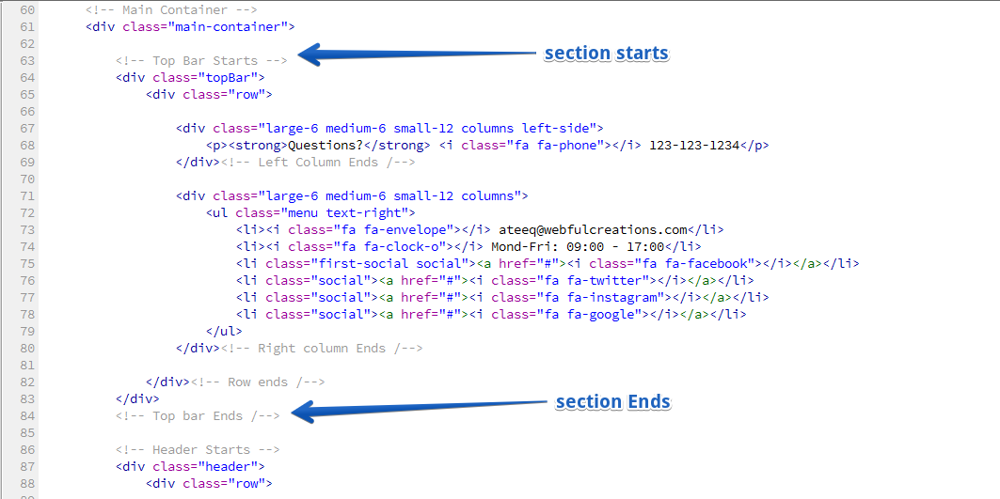
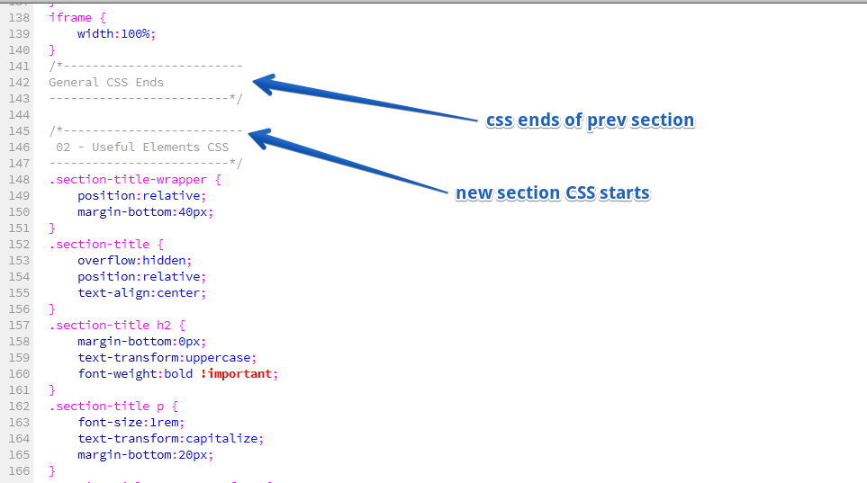

Root contain all 24 html files and 1 CSS file, this is main style css file. Other directories are as follow.
Folders
Each section in html is well commented and desciribing itself nicely. To use any available style in demo check html of that section to use anywhere you need. Like title with lines etc.

CSS is also very nicely commented and explaining itself by class names, style.css is main style sheet, while css/default-colors.css is for colors, other helping css files are also inside /css directory.
Revolution Slider
Please find revolution slider's documentation here https://www.themepunch.com/revsliderjquery-doc/slider-revolution-jquery-5-x-documentation/
The theme js is in webful.js file which is inside /js folder, other files are helping plugin files.
Foundation (Required)
I would like to say thanks to following to make work easy and fast.